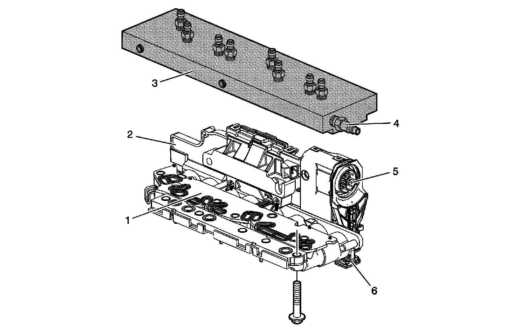
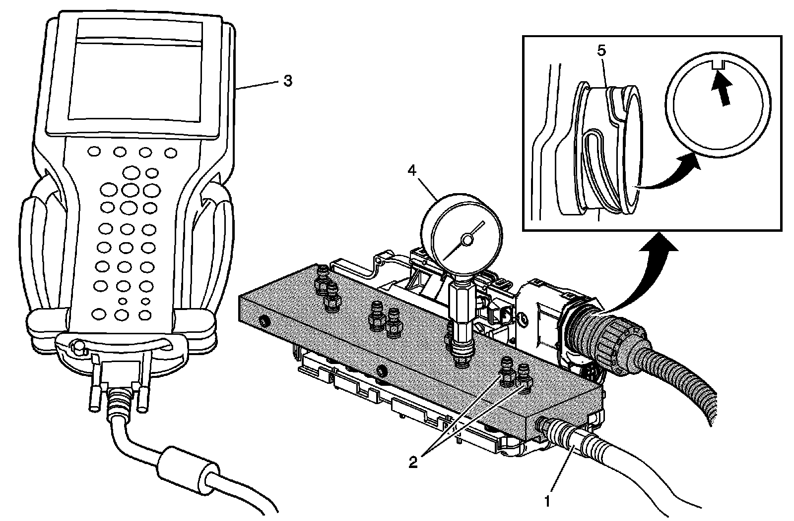
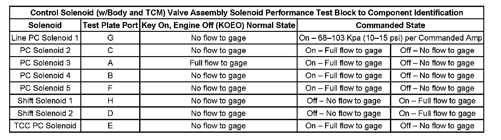

Control Solenoid Valve and Transmission Control Module Assembly Solenoid Performance Test
Control Solenoid Valve and Transmission Control Module Assembly Solenoid Performance Test
Tools Required
DT-47825 Control Solenoid Test Plate
The purpose of this procedure is to test the operation of the control solenoid (w/body and TCM) valve assembly for a stuck open or stuck closed solenoid. The DT-47825 bolts to the mounting surface of the control solenoid (w/body and TCM) valve assembly. Compressed air is attached to the test block, through the control solenoid (w/body and TCM) valve assembly solenoid passage and back to a pressure gage on the test plate, sent through the control solenoid (w/body and TCM) valve assembly solenoid, and back to the test plate pressure port.
An air pressure gage is used to display the air passing through the solenoid. If the solenoid is unable to allow air through or the air is constantly flowing through the solenoid may be stuck. The scan tool is used to command the solenoids On and Off while watching the air pressure test gage to determine if the solenoid is functioning correctly. The recommended shop air pressure for this test is 620.5-689.4 Kpa (90-100 psi).
Control Solenoid (w/Body and TCM) Valve Assembly with Control Solenoid Test Plate
Control Solenoid (w/Body and TCM) Valve Assembly with Control Solenoid Test Plate:

1 - Filter Plate Assembly
2 - Control Solenoid Valve Assembly
3 - DT-47825 Control Solenoid Test Plate
4 - Air Connection Port
5 - Transmission 16-Way Pass-Through Connector
6 - Electrical Connector Slide Lock
Important: To avoid solenoid overheating and possible internal damage, do not continuously operate the solenoid for more than 2 minutes at a time.
The TCM will normally cycle some of the transmission solenoids On and Off to keep the solenoid passages clean and clear, This is a normal function and will cause the valves to cycle open and closed quickly when the TCM is powered up. This will make the pressure gage needle flicker or move from high and low as the valves open and close, allowing air to exit the ports where the pressure gage is not connected.
It is necessary to drain the control solenoid (w/body and TCM) valve assembly of all remaining transmission fluid before attaching the test plate. Use caution when attaching air to the test plate, as any remaining transmission fluid in the control solenoid (w/body and TCM) valve assembly will be forced out. Use shop towels to cover the test plate ports in order to prevent fluid from being released into the air.
Preliminary Procedures
1. Raise and support the vehicle. Refer to Lifting and Jacking the Vehicle.
2. Remove the transmission fluid pan and filter.
3. Remove the transmission electrical connector.
4. Remove the control solenoid (w/body and TCM) valve assembly from the transmission.
Solenoid Testing Procedure
Solenoid Testing Procedure:

1 - Regulated Air Supply
2 - Test Ports
3 - Scan Tool
4 - Test Pressure Gage
5 - Electrical Connector Sleeve
1. Align and install the electrical connector sleeve to the control solenoid (w/body and TCM) valve assembly and secure with the connector slide lock.
2. If necessary, clean each side of the filter plate assembly and install the filter plate assembly back on the control solenoid (w/body and TCM) valve assembly. Clean the mounting surface of the DT-47825.
3. Bolt the DT-47825 to the control solenoid (w/body and TCM) valve assembly mounting surface. Use the bolts and washers supplied with the tool to attach the test block. Tighten the bolts to 5 N.m (44 lb in).
4. Connect the test harness supplied with the DT-47825 to the vehicle harness and to the TCM. Engage the connector locks.
5. Connect shop air to the DT-47825 air inlet. Do not exceed the recommended air pressure of 620.5-689.4 Kpa (90-100 psi).
6. With the ignition ON and the scan tool communicating with the vehicle, command the solenoid in question On and Off. Watch the air pressure gage for a change as you command the solenoid. Refer to Control Solenoid (w/Body and TCM) Valve Assembly Solenoid Performance Test Plate to Component Identification for correct solenoid function and test plate port connections for the solenoid being tested.
7. The solenoid should allow air pressure to flow or prevent air pressure flow depending on the solenoid state. The test results are read on the pressure gage.
8. Command the solenoid valve On and Off several times to determine the condition of the solenoid in question. Release the test air pressure from the pressure the gage between solenoid tests.
Control Solenoid Valve and Transmission Control Module Assembly Solenoid Performance Test:
